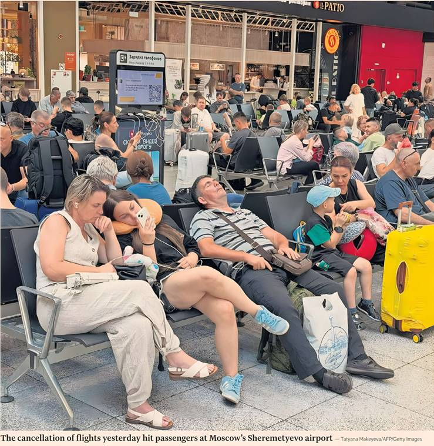

Courtney Weaver — Berlin

Russian state-owned airline Aeroflot was forced to cancel dozens of flights yesterday, after a hacking group claimed credit for a devastating year-long cyber attack.
The outage suffered by the country’s largest carrier is the latest in a series of cyber attacks against state-owned Russian enterprises this year, and one of several claimed by a new hacker group called Silent Crow.
By late morning yesterday, 49 flights had been cancelled and dozens more delayed, according to Aeroflot. The airline, which did not immediately confirm details of the hack, said it was working to “restore all services to normal as quickly as possible.”
It is not known whether Silent Crow, which posts messages in Russian and created a Telegram account only last December, is linked to a foreign state. The group said yesterday that it had been inside Aeroflot’s IT system for a year, in an attack orchestrated with Cyber Partisans, a group of Belarusian hackers that operates outside its home country.
Silent Crow said it had been able to “obtain and download” Aeroflot’s “entire array of flight history databases,” destroy 7,000 servers, and steal 20 terabytes of data, including surveillance systems files and recordings of executives’ conversations.
Russia's prosecutor-general’s office confirmed the airline hack and said it had opened a criminal investigation.
Russia has experienced an increase in cyber attacks since the beginning of its full-scale war in Ukraine, said Vyacheslav Kirillov, an expert at cyber security group Kaspersky. Hackers were increasingly targeting financial organisations, the public sector, telecom providers and the media, he said.
The first attack claimed by Silent Crow was against Rosreestr, the government agency managing property and land records.
Last week, Ukrainian news outlets reported that Ukrainian hackers were behind a cyber attack on Gazprom that caused significant disruptions and destroyed vast amounts of data.
Other Russian businesses hit by cyber attacks this year include state rail company Russian Railways, the Moscow metro system and Russian internet provider ASVT.
President Vladimir Putin’s spokesman Dmitry Peskov said reports of the Aeroflot attack were “alarming.”
Russia's aviation sector has become increasingly stymied by Ukrainian drone attacks — one of Kyiv’s few tools for making the three-year war hit home for middle-class Russians. Russian airlines were forced to cancel 485 flights in early July during a particularly bad period for drone strikes.